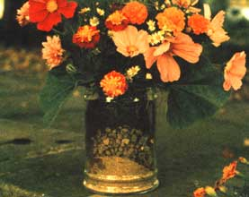
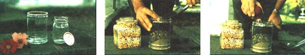

There's no doubt about it! A handsome flower vase can transform even the humblest bouquet into a work of art. Unfortunately, those burnished copper urns and elegant porcelains shown in fancy home-and-garden magazines cost plenty. (And as veteran vase shoppers know, inexpensive flower containers are seldom fit to bring into the house.) As a result, many folks-against their wishes-end up sticking their finest garden blooms into old foil-wrapped coffee cans, water glasses, or equally unglamorous pots and jars.
But not Norma and Jim Leary of Jamestown, Pennsylvania. For they make their own beautiful-yet inexpensive-vases from ordinary glass containers and various natural materials . . . such as pebbles, sand, soil, corn, beans, peas, and birdseed. You can too, and here's how:
PRELIMINARIES: As shown here in the first small photo, select a tall, round apothecary jar (or any other large, attractive glass container) to serve as the outer shell of your double-walled vase. Then center an ordinary pint jar upright inside the larger vessel. Finally-to keep your peas or pebbles or whatever from falling into the smaller jar-cap it with foil, waxed paper, or an old lid.
DESIGN: Fill the space between the two containers with layers of whatever decorative materials you choose. Here -in the second small photo-Jim places a final cap of dark-brown loam on top of the lower strata of pebbles and sand. The square apothecary jar on the left contains tiers of corn, peas, beans, and birdseed. As you can imagine, the design possibilities are nearly endless: Just vary the color, texture, and/or size of the particles ... the thickness, shape, and/or sequence of the layers . . . the size and/or configuration of the outer container.
DISPLAY: Fill the inner container of your creation with water and freshly cut flowers from the garden . . . or from the florist's shop if necessary (anything to get blossoms into the house). We think the naturalistic motif of the Learys' "sand and seed" vases complements the beauty of the bouquet in the large photo above as well as or better than most of the high-priced store-bought urns and amphoras we've seen.
RECYCLING: After your flowers have faded, remove the water from your vase's inner container with a large basting syringe-as shown here in the last small photo-or with a siphon. And then . . . if you find you've grown tired of the "old" vase, just dismantle it layer by layer and make a new one from scratch!
|
 |
 |
|